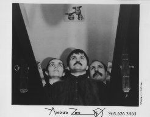

Home Artist links

Absolute Zero - A Live In The Basement
| Artist: | Absolute Zero |
| Title: | A Live In The Basement |
| Label: | self produced SP01 |
| Length(s): | 19 minutes |
| Year(s) of release: | 1990 |
| Month of review: | 06/1997 |
Line up
Aislinn Quinn - keyboards and voice
Enrique Jardines - bass "au contraire"
Paul Roger - drums and percussion
Tracks
| 1) | Paradigms | 11.20
|
| 2) | An I To An Eye | 7.25
|
Summary
Although already long out, the band tries to get back into the picture
and are currently recording two new CDs.
The music
Starting out as a disjointed soundtrack for James Bond, the first of the
two tracks on this mini CD is a complex track with many a signature
change and (over?)full of breaks. The vocals are very high and quirky
and seem to have been sung while the vocalist Aislinn Quinn was high
on helium. The vocals remind me quite a lot of what one might expect from
Frank Zappa (his name is lacking in the inspiration list though).
It seems that Aislinn is treated in a way that one would with any
instrument. The voice changes with the phrases, but generally
it's very high.
The vocals have little to do with the music, often and they seem to exist
in parallel to it, while the drums and bass do their violence to the listeners
ears. Paradigms by the way can, according to the lyrics, also be written
as "pair of dimes". After a part that contains quite a lot of vocals, we
get into a chaotic part with lots of keyboards, but along the way the
bass line and fluting keyboard of the beginning take over once again.
I especially like the bass line with the flute, as they give the
track a sultry atmosphere, while the vocals are estranging and discordant.
The drums are all electronic although the band boasts a drummer it then
seems that he's more like a "triggerer".
The next and last track of the album starts out in the claustrophobic
King Crimson way, but continues in quirky fashion with what must be
a synthetic sax. The vocals are again high and are quite similar to the
last track. After the vocal part the song begins a menacing build up
with busy drumming, but unfortunately the band does not think it is time
yet to continue this til the end of the track. No, the song ends there it
seems and continues in a slower brewing way with again those vocals after
which the build up starts yet again.
I have to warn everyone here that is a live album and has not been
mixed or produced so might contain a few errors (some of the vocal
parts did not come out as well as might have been done), but the music
is rather chaotic anyway, so one (at least I) hardly hears it.
Information from the band showed the band has thought really well about
the contents lyrically and musically. Also technically it seems they
have taken a lot of time and trouble to arrive at their unique sound.
Conclusion
A mini album in the RIO vein, quite quirky, but also driven and energetic,
containing vocals that one definitely has to get used to. The music is
quite appealing in it's way. I'm very interested to hear what these
years of silence have done to the band's sound. Maybe a better idea for
everyone to wait until then, but for those who cannot, mail them.
© Jurriaan Hage